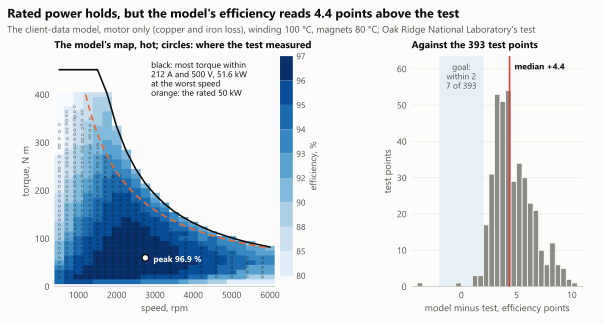
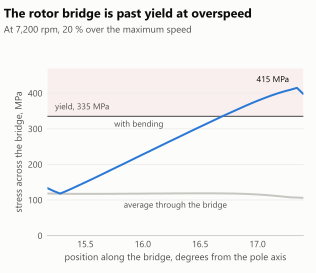
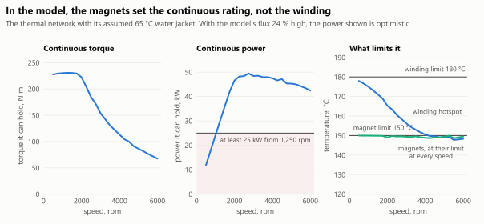

The Question
Can an open-source toolchain predict a production traction motor well enough for early design screening? The test case is the 2004 Toyota Prius motor: 48 slots, 8 poles, magnets buried in the rotor in a V, rated 50 kW and 400 N m. Oak Ridge National Laboratory took one apart, drew it and measured it, and published the results.
Two kinds of answer are kept apart. Design checks come from my models alone: does the rated torque fit inside the copper's current limit, does the rated power hold to top speed, does the rotor survive overspeed, how much can the motor deliver continuously, and what happens if the inverter stops switching at top speed? Validation is a comparison with the laboratory's measurements, done once, at the end, against limits agreed before any data was seen: back-EMF within 5 %, torque within 10 %, efficiency within 2 points.
The Answer
Not yet. The model missed all three limits in its blind test. Every prediction was written down before any measurement was opened. The comparison was then run once, on 22 November 2026. The model predicts 110.9 V of back-EMF per 1,000 rpm where the laboratory measured 89.8 V. Its torque is 7 % high at low current, rising to 24 % high at 250 A. Its efficiency is higher than the measured motor's by about 5 points.
The three misses point the same way. The model carried about 24 % too much magnet flux. That raises the back-EMF directly, raises the torque per amp with it, and raises the efficiency, because a stronger magnet needs less current and so loses less in the copper.
Then I calibrated it, using only data a client would have. Fitted to the back-EMF test alone, the magnets come out weaker than the published material (remanence 1.036 T, not 1.243). The efficiency gap only narrows from 5.2 to 4.5 points, so the rest of it is losses this model leaves out. And one design verdict flips: with the weaker magnets the motor no longer holds its rated 50 kW to 6,000 rpm (48.0 kW cold, 44.5 kW hot). I'd predicted the opposite. A design review using the blind model would have signed that requirement off.
The blind verdicts stay on the record. The calibrated model is a revision, compared again, not a replacement for the test it failed. One finding holds either way and is confirmed by the laboratory's own measurement: with the inverter not switching at top speed, the motor generates far more than its 500 V supply (850 V measured). The rotor stress at overspeed doesn't depend on the flux.

Why It Matters
Every other study on this site checks a model against theory: an exact solution, a handbook value, a conservation law. That shows the equations were solved correctly. It doesn't show the model matches a real machine, with real materials, tolerances and everything the model leaves out. Only measured data can do that, and it's what a client ultimately cares about.
Comparing with test data has its own trap. If you can see the answer while you build the model, it's very easy to adjust things until they agree, and the agreement then proves nothing. So this study was done blind. The machine was rebuilt from the published drawings, every prediction was written into a case file and committed before its run, the limits were agreed first, and the measurements stayed unopened until the whole model was finished.
The result is a failure, and it's the most useful result on this site. Every internal check on this model passed: the mesh studies, the power balance, the cross-checks between methods. They showed the equations were solved correctly. They couldn't show that one of the inputs was wrong, and a single honest comparison found it. That's what validation is for, and it's why I'd want it on any model a decision depends on.
The Blind Comparison
The laboratory's test report gives the back-EMF from 500 to 6,000 rpm, the peak torque with the rotor locked at seven currents, and 393 measured efficiency points inside the range of my map.
| Quantity | Limit, agreed beforehand | Prediction against measurement | Verdict |
|---|---|---|---|
| Back-EMF per 1,000 rpm | within 5 % | 110.9 V against 89.8 V: 23.5 % high | Missed |
| Peak torque, 50 to 250 A | within 10 % | 7 % high at 50 and 75 A, rising to 24 % high at 250 A | Missed |
| Motor efficiency, 393 test points | within 2 points | 5.2 points high (median); 3.4 to 7.9 for most points | Missed |
The torque comparison depends on how the laboratory's locked-rotor current is read. Its report gives a DC value without saying whether that's the peak of the three-phase current or its rms equivalent. Read as a peak, the model is 7 to 24 % high. Read as rms, it's 55 to 65 % high. It fails either way, and both readings are in the results.
The efficiency gap has two parts. The map left out mechanical, magnet and inverter losses by design, so it was always an upper bound. But at about 5 points the gap is much larger than those losses usually are, and the excess magnet flux accounts for the rest.
The laboratory also reports continuous ratings of 15 to 21 kW at base speed, depending on coolant temperature. My thermal model gave about 30 kW with its assumed cooling (28 kW after calibration). Thermal wasn't in the agreed comparison, and the cooling is assumed, so I don't count that as agreement or disagreement.
The Revision After the Test
Once a model has failed, the temptation is to tune it to every measurement until it agrees, and then the agreement proves nothing. So the revision was planned and committed before anything was computed, and it only uses the kind of data a client would hand over for an existing motor.
- Calibrate on the routine test. Two explanations fit the measured back-EMF exactly: weaker magnets (remanence 1.036 T instead of 1.243), or fewer effective winding turns (0.807 of the drawing's).
- Pick between them with the cheapest test that tells them apart. A turns error would scale the inductances by 0.807² = 0.65; a magnet error wouldn't. The laboratory's static inductances, which a client would normally have, sit near the weaker-magnet version and far from the other, so that's the one kept. I first chose using the locked-rotor torque, then switched when it was pointed out that a client often wouldn't have that test.
- What it still gets wrong. Torque is within 4 % at low current but 12 to 14 % high from 150 to 250 A. The measured ratio of the two inductances is 2.6 against the model's 3.2, so the magnetic path along the magnet axis isn't quite right. A thinner real magnet is my first suspect.
- Tested on data kept out of the fit. Over the 393 measured efficiency points the calibrated model is 4.5 points high at the median, against 5.2 blind. Still well outside the 2-point limit: calibration fixes the flux, and what's left is losses the model leaves out (mechanical, eddy currents in the magnets, extra copper loss at high frequency).
- The design checks, rerun. Rated power to 6,000 rpm now fails (48.0 kW against 50). The continuous rating is 28.1 kW at 1,250 rpm against a 25 kW requirement: it passes at the nominal fit between stator and housing, but fails (24.3 kW) at the loosest fit I tried. So that rating hangs on a number I'd ask a client for, the press-fit interference.
The Model
- Machine
- The 2004 Toyota Prius traction motor: 48 stator slots, 8 poles, interior V-shaped permanent magnets, an 83.8 mm stack and a 0.775 mm air gap. Rated 400 N m and 50 kW, 6,000 rpm maximum.
- Geometry
- Rebuilt from Oak Ridge's dimensioned drawing, read from the vector outline in the PDF and not by eye. The bridges and magnet pockets come from the laboratory's design reports.
- Materials
- Magnets from a published material line, remanence 1.243 T at 20 °C in the blind model; 1.036 T after calibration on the back-EMF. The lamination grade isn't published, so M330-35A stands in, with two other grades run to bracket it.
- Electromagnetics
- 2D magnetostatics in FEMM 4.2, driven by Pyleecan, over one electrical period in 48 steps. Open circuit for the back-EMF; loaded runs sweep the current angle to find the most torque per amp.
- Efficiency
- Look-up tables of torque, flux and iron loss over the plane of the two current components, 260 field solutions per magnet temperature. At each speed and torque the map uses the current with the least loss that a 500 V supply can drive. Motor only: copper and iron loss.
- Rotor stress
- CalculiX, plane stress, half a pole at 7,200 rpm, with the magnets' centrifugal load on their seats. Stress is linearised across the 1.45 mm bridges, with elements down to 0.05 mm.
- Thermal
- A lumped network of the yoke, teeth, windings, end windings, housing and rotor, fed with the losses at its own temperatures and solved to a steady state. Limits: 180 °C at the winding hotspot and 150 °C at the magnets, with a 65 °C water jacket. The cooling and the limits are assumed, because they aren't published.

The case file: recorded assumptions, limits and inputs
This is the study's own record, written before the run and saved with it, in the shorthand of the case file.
cases/motor_prius_ornl_oc_mesh_r3.toml ↗
2004 Toyota Prius traction motor rebuilt from ORNL/TM-2005/33 Fig. 21 (radii, air gap 0.775 mm, slot, pocket thickness and position), ORNL/TM-2004/120 (bridge) and ORNL/TM-2004/137 Fig. 14 (magnet B-H line), laminations M330-35A (stand-in grade), at open circuit, 1000 rpm; Pyleecan + FEMM 4.2 magnetostatics over one electrical period (48 steps), mesh fineness 2 / 4 / 8; back-EMF and the uncontrolled-generator voltage at top speed.
Assumptions, and How Each Is Checked
- 2D magnetostatics (FEMM), no end effects: the stack (83.8 mm) is long against the air gap (0.775 mm), but end-winding leakage and axial fringing are not modelled.
- Stator, rotor, slot and pocket thickness from ORNL/TM-2005/33 Fig. 21; bridge 1.45 mm from ORNL/TM-2004/120; magnet Br 1.243 T and recoil permeability 1.129 from ORNL/TM-2004/137 Fig. 14 (temperature not stated, taken as 20 C); magnet width and winding still Pyleecan's.
- Laminations M330-35A, a stand-in: ORNL gives the thickness (0.36 mm) but not the grade. B-H curve from Tata Steel's typical data (50 Hz) up to 1.8 T, extrapolated above (saturation polarization 2.0 T).
- Magnet temperature 20 C; Br falls about 0.1 %/K, so a hot motor has a lower back-EMF (stated, not modelled here).
- Maximum speed 6000 rpm, the commonly published rating for this motor; ORNL's design report tabulates ratings only up to base speed.
Limits
- No test data in this case: the ORNL comparison is a separate, blind step.
- The magnet fills the pocket thickness (HoleM50); TM-2004/120 gives a thinner magnet (5.31 mm), not modelled.
- Line-to-line peak from the phase flux linkages with their harmonics; the inverter's own clamping is not modelled.
- The real lamination grade is unknown; the bracketing grades (M250-35A, a high-strength rotor grade) are separate cases.
Inputs
| Input | Value |
|---|---|
| machine | Toyota_Prius_ORNL.json |
| speed_rpm | 1000 |
| id_A | 0 |
| iq_A | 0 |
| mesh_fineness | 1 |
| steps_per_period | 48 |
| angle_points | 2048 |
| max_speed_rpm | 6000 |
| bus_voltage_V | 500 |
| rated_torque_Nm | 400 |
cases/motor_prius_efficiency_r1.toml ↗
2004 Toyota Prius traction motor (our machine, laminations M330-35A), motor-only efficiency map from the verified dq look-up tables (25 A tables merged with low-q-current tables at 6.25 A): 500-6000 rpm, 10-400 N m, least copper + iron loss under the 500 V bus voltage limit and the current limit; cold (all 20 C) and hot (windings 100 C, magnets 80 C) scenarios.
Assumptions, and How Each Is Checked
- Motor-only efficiency: copper (DC resistance, end connections included) and iron loss; no mechanical, magnet eddy-current, AC copper or inverter loss (user's framing, 2026-11-22).
- Voltage limit Vdc / sqrt 6 phase rms (linear modulation of a 500 V bus); the resistive drop is included, inductive coupling to the inverter is not.
- Current limit 212 A rms for the design (25 A/mm^2 on 76.4 mm^2 of bare copper per slot, a stated assumption) and 300 A for the map's edge.
- Iron loss from the table's coefficients, P = A f + B f^2 + C f^1.5 with f the electrical frequency, at each grid point.
- Copper 1.72e-8 ohm m at 20 C, alpha 0.00393 /K; one parallel path; end connection 120.6 mm per side (geometry estimate, see header).
Limits
- No test data in this case: the ORNL comparison is a separate, blind step at the end of the study.
- The tables are 2D magnetostatic at 1000 rpm; the iron loss is scaled to speed by the fitted coefficients, not recomputed per speed.
- Steady thermal corners only (cold and hot); no thermal model links temperature to the operating point yet.
Inputs
| Input | Value |
|---|---|
| lut_run | 20261122-102002_motor_prius_lut_cold,20261122-133946_motor_prius_lut_cold_lowiq |
| magnet_temperature_C | 20 |
| winding_temperature_C | 20 |
| series_turns_per_phase | 72 |
| turn_copper_area_mm2 | 8.492 |
| stack_length_m | 0.08382 |
| end_connection_length_m | 0.1206 |
| copper_resistivity_20C_ohm_m | 1.72e-08 |
| copper_alpha_per_K | 0.00393 |
| bus_voltage_V | 500 |
| current_limit_design_A | 212 |
| current_limit_map_A | 300 |
| speed_min_rpm | 500 |
| speed_max_rpm | 6000 |
| speed_step_rpm | 250 |
| torque_min_Nm | 10 |
| torque_max_Nm | 400 |
| torque_step_Nm | 10 |
| rated_power_kW | 50 |
| rated_torque_Nm | 400 |
| ref_back_emf_V | 111.006 |
| ref_mtpa_100A_Nm | 251.6 |
| ref_mtpa_200A_Nm | 456.9 |
How It Works
The machine. Pyleecan, the open-source motor design library, ships a model of this motor. Rebuilt from the laboratory's own drawing, the real slot turns out to be 145 mm² and not 218, and the air gap 0.775 mm and not 0.750. So the study uses its own machine definition, and the figure below shows the difference.

Electromagnetics. FEMM solves the magnetic field in a cross-section of the motor at each rotor position. With no current, the changing flux through the windings gives the back-EMF, the voltage the spinning magnets generate. With current, the model sweeps the angle between the current and the magnets to find the most torque for each current level.
Efficiency. Solving the field for every speed and torque would take too long, so the field is solved once over a grid of currents and stored as tables. For each point on the map, a search then finds the current that makes the requested torque with the least copper and iron loss while staying inside the voltage the supply can provide. Above base speed that means spending some current to weaken the magnets' field, which is how these motors reach high speed.
Rotor. The magnets sit in pockets, held in by thin bridges of steel at the rotor's edge. At speed, the magnets and the steel outside them pull outward on those bridges. The stress is linearised through each bridge, the same method as the pressure vessel in study 18, so the sharp pocket corners don't decide the answer.
Thermal. The motor is divided into lumps (yoke, teeth, winding, end windings, housing, rotor) connected by thermal resistances worked out from the geometry. The losses depend on temperature, so the network and the losses are solved together until they agree. The continuous rating at each speed is the largest torque that keeps both the winding and the magnets within their limits.


How I Checked It Before the Test Data
All of these passed. None of them could have found a wrong input, which is the point of the comparison above.
- Independent routes to the same number. A power balance (the electrical power going in against torque times speed) checks FEMM's torque to 0.1 to 0.4 %. Winding theory checks the flux linking the coils to 0.3 to 0.6 %. The efficiency tables reproduce the separate back-EMF and torque studies to 2.7 × 10⁻⁶ and 0.2 %.
- The rotor method on an exact case. A plain spinning disc, which has an exact solution, comes out right to 4 × 10⁻⁴ through the same pipeline.
- The thermal network against a field model. A CalculiX heat-conduction model of half a slot pitch, with the same losses and boundaries, agrees on the winding mean within 3 to 6 %, the teeth within 2 to 5 % and the yoke within 2 %. The slot hotspot is 4 to 7 % low.
- Mesh studies on every quantity, with the coarsest mesh dropped where it left the thin bridges less than one element thick.
- Sensitivity to what isn't published. Three lamination grades move the back-EMF by 0.13 % and the torque by under 2 %. So the unknown steel grade isn't what caused the miss.
What I Caught Along the Way
- The blind test caught what nothing else could. About 24 % too much magnet flux, in a model that had passed every internal check.
- A calibration that changed a design verdict the other way from what I expected. I predicted weaker magnets would leave more voltage headroom and raise the power at top speed. It fell, because less magnet flux also means less torque per amp when the field is being weakened. That's why flux-dependent verdicts get rerun after any calibration, not carried over.
- A misread column, caught before scoring. I misread one column of the laboratory's back-EMF table at first. It was caught and corrected before any score was written, and it's in the protocol log.
- A copper area 1.57 times too large. The laboratory quotes a slot fill of 0.84, and my first version applied it to the whole slot. Re-reading the definition, it's the fill of the squares around the insulated wires. The bare copper is about 0.59 of the slot, so the current-density limit is 212 A and not 333 A. Caught and corrected before any test data was seen.
- A library model that wasn't the motor it was named after. The library's slot is half as large again as the drawing's. The drawing itself turned out to be stretched 1.1 % in one direction, and was corrected before use.
- An efficiency map that looked finished. The first map passed its spot checks but failed its interpolation check, all on one row of the table. At light load and high speed the map moved by up to 10 points with the table spacing. Finer rows at low current fixed it everywhere from 20 N m up, to under 1 point.
- A hotspot in the wrong place. The thermal network first put the slot's hottest point in the middle of the winding and read 10 % low. The field model put it at the top of the slot, by the tooth tips. Reading the hotspot there halved the error.
- A leak in the blind protocol, recorded and not hidden. A filter on one of the laboratory's reports let through some of its own model results, not measurements. They're logged with their time and declared in every case that followed, and extraction was by whitelist only after that.
Limits, and What I'd Do Next
- The figures on this page are the blind model's, because they're the predictions that were tested. The calibrated numbers are given in the text beside them.
- The calibrated model still misses on efficiency by 4.5 points and reads torque 12 to 14 % high at high current. Closing that needs the losses the model leaves out, and a second look at the magnet's thickness.
- The rated torque within the copper limit (19.8 A/mm² against 25) was checked on the blind model and hasn't been rerun on the calibrated one.
- The laboratory also measured the air-gap field after taking the motor apart. A real project wouldn't have that, so I've left it unopened.
- 2D magnetostatics: no end effects, no eddy currents in the magnets and no extra copper loss at high frequency. End leakage is one of the suspects.
- The lamination grade, the end-winding length and the copper temperature are estimates. Their effects are bracketed or stated.
- Thermal: steady state only. The cooling, the insulation class and the magnet grade are assumed, and no thermal test data was used.
- The overspeed result depends on the stand-in steel. A stronger grade (M250-35A, 455 MPa typical yield) would pass.
Evidence
Run reports, with every check and the saved inputs